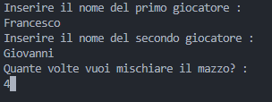
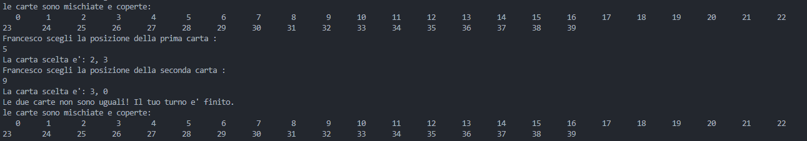
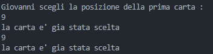
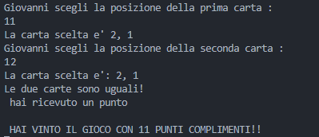

Si vuole simulare la gestione di un’agenda elettronica contenente appuntamenti. L’agenda è suddivisa in giorni, per 12 mesi complessivi. Ogni giorno è identificato da 24 ore. Dato un mese, un giorno e un’ora permettere all’utente di, Inserire un appuntamento, Disdire un appuntamento, Inoltre permettere all’utente di, Data un’ora visualizzare tutti gli appuntamenti in un mese Provvedere all’implementazione dell’algoritmo per la simulazione dell’agenda.
Nella prima immagine si effettua la registrazione degli utenti, inserendo quanti utenti si vogliono registrare (con un massimo di 20 utenti), si inserisce il proprio nome, il proprio cognome e quanti impegni si vogliono inserire(dopo la registrazione si deve aggiungere obbligatoriamente un impegno).
Nella seconda immagine si inserisce l'ora, il giorno, il mese e l'anno dell'impegno che si vuole aggiungere con una piccola descrizione dell'impegno aggiunto.

Nella terza immagine ho creato un piccolo menu dove poter scegliere cosa fare, ad esempio se aggiungere, disdire o visualizzare un impegno, oppure si può anche uscire dall'agenda, inserendo una lettera indicata in base all'opzione che si vuole eseguire il programma eseguirà l'opzione richiesta.

Nella quarta immagine ho inserito nel menu la lettera 'A', cioè la visualizzazione degli impegni, si inserisce l'ora il giorno e il mese, ed il programma visualizzerà gli impegni in agenda

Nella quinta immagine invece inserendo la lettera 'D' nel menu, si può disdire un impegno inserito in precedenza, si inserisce l'ora il giorno il mese e l'anno dell'impegno in modo tale che il programma lo trovi e possa eliminarlo.

In quest'ultima immagine ho inserito la lettera 'I' nel menù, qui si può inserire un nuovo impegno, dove analogamente alla seconda immagine si inserisce l'ora il giorno il mese e l'anno dell'impegno ed una piccola descrizione.

infine si può uscire dal programma esso stesso salverà tutti i dati degli impegni creando un file.
Sviluppare un algoritmo per la simulazione del gioco delle coppie di carte tra due giocatori identificati dai loro nomi. Inizialmente “mischiare” un mazzo di carte napoletane. L’algoritmo per mischiare le carte si basa sull’idea di scambiare effettivamente a coppie le carte del mazzo; una variabile in input permette di indicare quante volte si devono effettuare gli scambi. Viene scelto casualmente quale dei due giocatori deve iniziare il gioco. Vengono “scoperte” due carte la quale posizione è indicata dal primo giocatore. Se le due carte hanno lo stesso valore il giocatore si aggiudica un punto e le due carte vengono scoperte. Il giocatore continua finchè non sbaglia (non trova due carte uguali) e il turno passa all’altro giocatore. Ad ogni turno il giocatore ha a disposizione l’elenco delle carte coperte e quelle scoperte. Il gioco termina quando si scoprono tutte le carte. Il giocatore che ha totalizzato più punti vince la partita.
Nella prima immagine si effettua la registrazione dei giocatori e si inserisce quante volte si vuole mischiare il mazzo da gioco (il gioco si vince quando si accumulano 11 punti).
Nella seconda immagine il programma mischia le carte (possono assumere valore 1,0 a 10,4, dove il primo numero rappresenta il valore della carta invece il secondo numero rappresenta il seme della carta), le copre e mette d'avanti una selezione di numeri da 0 a 39 dove possiamo sceglierne due, dopo aver fatto la prima scelta, ad esempio qui si sceglie la carta numero '4', il programma mostra la carta scelta, in questo caso '1,1', in seguito si fa la seconda scelta, qui si sceglie il numero '9', cioè la carta '3,3', le carte non sono uguali quindi il giocatore non riceve nessun punto e si passa al turno dell'altro giocatore.

Nella terza immagine il programma mischia di nuovo le carte dopo il turno del primo giocatore, adesso è il turno del secondo giocatore, dove in questo esempio sceglie un numero cioè '5' quindi la carta '2,3' e '9' cioè la carta '3,0' anche in questo caso le carte non sono uguali e il giocatore non riceve nessun punto.
Nella quarta immagine il programma capisce quando le carte sono gia state scelte e passa al turno successivo ed il giocatore non riceve punti.
In quest'ultima immagine il giocatore ha vinto il gioco raccimolando un totale di 11 punti, trovando le due carte uguali 11 volte, infatti si può notare che quando si trovano due carte uguali cosa succede quando si riceve un punto "le due carte sono uguali! hai ricevuto un punto", cosi il programma termina.
